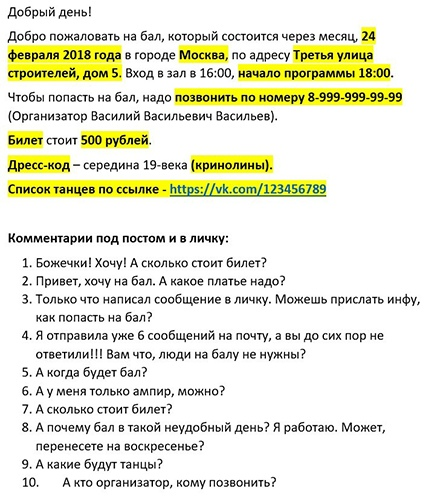

"Ассоциация Исторического и Социального Танца" — общественная организация, основанная на добровольном членстве, не преследующая извлечение прибыли в качестве основной цели своей деятельности, зарегистрированная в апреле 2018 года в соответствии с Гражданским кодексом Российской Федерации, Федеральным законом «О некоммерческих организациях» от 12 января 1996 года № 7-ФЗ.
Основной целью и предметом деятельности Ассоциации является объединение под единым началом как отдельных граждан и юридических лиц, так и их групп, занимающихся историческими (бальными) и социальными (народными) танцами и бальной культурой, для совместного развития и популяризации данного направления в Российской Федерации и за её пределами.
Наша миссия — создание единого пространства для диалога и сотрудничества всех любителей исторических и социальных танцев. Мы против навязывания догм и предвзятых точек зрения, но мы приветствуем конструктивные диалоги, обоснованные позиции и желание совместно развивать любимое дело.
Привет! Я Элана, если кто меня не знает, я руководитель студии исторического танца «Трианон».
Сегодня я бы хотела бы рассказать пару слов волнующей многих людей теме – разнице между хобби и работой. И да, для меня танцы – это работа :)
Многие начинают заниматься историческими танцами, чтобы морально отдохнуть от работы, от рутины, чтобы познакомиться. Они приходят в школы танцев и погружаются в этот мир истории, костюмов и движения.
Я преподаю уже около 15 лет, и очень часто я сталкивалась с тем, что отзанимавшись год или около того, люди решали что стоит делать свой танцкласс с модистками и печеньками, со своими правилами и как им это нравится.
Я, в общем, за свободу выбора, потому что сама ценю свободу и никогда в этом не мешала. Каждый раз с интересом смотрела – что и этого получится. Почему?
Все просто, когда вы начинаете свое дело, оно не будет сразу на вас работать. Здесь и главное отличие работы от хобби: сначала нужно конкретно в него вложиться, и речь здесь даже не о капитале, а о времени и силах.
Как только хобби начинает занимать большую часть вашей жизни, то стоит задуматься о том, что пора превращать его в работу. Ну и здесь несколько примеров, что я слышала на эту тему и что бы я могла ответить.
1. «О нет» - скажут многие, «Ведь хобби – это для души, а работа – это занудное времяпровождение для денег!» Вы уверены? То что работа должна приносить только головную боль – это пережиток прошлого. Вам нравится то, что вы делаете, у вас получается, у вас есть люди, это начало приносить деньги? Это все-таки работа…
2. «Йуху! Брошу все и начну зарабатывать тыщи на танцклассах!» Можно, но для этого придется посвятить все свое время для раскрутки себя, школы, мероприятий. Это ненормированный график, вы можете отдыхать понедельник и вторник, когда все ходят на работу, радостно попивая кофе и глядя на снег из окна, а потом месяц пахать от рассвета до заката без выходных, потому что надо. Это ведь работа для себя. Главная проблема всех начинающих фрилансеров – неумение организовать свое время. Здесь надо очень четко уметь ограничивать себя самому. Многих отсутствие руководства очень расслабляет. Человек видит комп, садится потупить на часок и тут оп очнулся и ночь. Любая работа – это прежде всего самодисциплина. Это важно и нужно об этом задуматься в первую очередь.
3. Вы интроверт? Тогда это работа (именно работа) не для вас. По сети гуляет забавная картинка:
Вы думаете это смешно? ЭТО ПРАВДА! Вы будете постоянно на виду, вам будут задавать вопросы и вы должны знать на них ответы, вы всегда должны улыбаться. И всегда быть на связи. И всегда готовы рассказать и показать даже если рассказывали и показывали это минуту назад, пять минут назад и вообще твердите об этом постоянно.
Вы ведете мероприятие и у вас плохое настроение или что-то болит? Это не интересует никого, люди должны видеть вашу улыбку, радость в глазах и легкость движений. Вы – пример!
4. Хотите быть успешным – научитесь универсальности. Танцевать только? Да ладно! Хочешь читать исторические книги в оригинале и повышать свой уровень – учи иностранные языки, хочешь чтобы и ты сам и твои ученики были хороши на балах – учись шить, делать прически, делать макияж. Учись готовить, потому что заказ фуршета на бал не всегда возможен у профессионалов, учись рисовать и фотографировать, чтобы развить чувство вкуса, учись играть на инструментах, чтобы развить чувство ритма и умение слышать музыку, задумайся о режиссуре, научись работать с музыкой и светом, пройди курсы медсестер или курсы по массажу, чтобы понимать как устроен человек и быть готовым помочь ему в нужный момент, хочешь свой сайт – иди и учись на компьютерных курсах. И да, не забывай, еще надо все время танцевать, потому что без практики навык теряется.
5. Не бойтесь брать деньги за вашу работу. Вы вкладываете свое время, свой труд, свои усилия и это должно быть оплачено. Вы альтруист и это ваше хобби? Да запросто, тогда просто не судите других по себе. Пекарь, делая булочку, тратит 10 минут своей работы, муку, масло, молоко, творог (ну или что там) и вы с радостью отдаете ему 100 рублей за минутку вашего удовольствия и сладкого вкуса. Учитель на занятии бегает и прыгает полтора часа, тратит время, силы и чуток нервов. Организатор тратит энное количество времени готовя мероприятие, неделями танцует с бубном для утрясения всех мелочей (см пункт выше) и тратит пару пучков нервов, чтобы все прошло без сучка, без задоринки. Неужели он не достоин получить деньги за свои усилия?
А вообще
Зарабатывать деньги – не стыдно, делать свою работу хорошо – это правильно, давать людям кусочек счастья – бесценно!
У вас есть желание пойти своим путем – подумайте много-много раз, взвесьте все за и против, найдите единомышленников и вперед!
Мир исторического танца развивается и вклад каждой школы очень важен!
Давно не писала своих дневников танцора-путешественника. И так как недавно с мужем мы съездили в Италию именно по танцевальным делам, то самое время продолжить начатое.
Итак, рассказ «Щеримония культурале или итальянцы танцуют»
Я уже бывала на балах в Италии, но в основном это были балы в северной части Италии и в основном от Фабио (не все). Здесь же нас внезапно пригласили на два мероприятия в южной части: 1) Бал-променад в Казерте (под Неаполем), 2) Бал в Риме.
Пригласили на балы абсолютно разные организации, и мы радостно согласились, потому как разница в неделю и одной поездкой можно, так сказать, убить двух зайцев. Так каково же было наше удивление, когда мы поняли, что эти организации на дух друг друга не переносят. Все как обычно: была одна школа, потом их стало их две, а когда есть две, то там наверняка в скорости появятся еще 5, что собственно произошло.
Обижать никого не хотелось, поэтому мы сказали, что уж простите, ситуации не знали, но никому отказывать не будем. В общем обошлось, нас хорошо приняли и там и там, но правда соперничество ощущалось конкретно.
Бал 1
Королевский дворец в Казерте «Бал Наций»
Организовывала Ассоциация Бурбонов и новая Ассоциация «Гармония» (Harmonia suave)
Ассоциация создалась совсем недавно, и в честь своего открытия закатила бал – променад.
Для нас мероприятие началось чуть раньше, организаторы пригласили всех почетных гостей познакомиться (вдруг еще кто-то кого не знает) и отужинать в ресторане.
Ну и программа бала: Сначала показательная часть, то бишь проход по городу в костюмах, церемония открытия в дворцовом парке, торжественное разрезание торта, час контрдансов в ротонде, свободное время с гулянием и бал в тронном зале. Все это с 10 утра до 8 вечера с переодеванием.
К сожалению, о том, что нужны еще прогулочные костюмы, мы узнали только за день до бала, поэтому пришлось что-то придумывать на ходу.
На этом балу было несколько приглашенных гостей – незабвенный Арно Дежиоанни со своими танцорами, Жужа и Алан Дингсдейл (кто был на ФИТе, помнит) и мы с Егором. Было очень приятно, что с нами носились как с писаными торбами – и ленточку на открытие разрезать, и тортик порезать, и на всех фотках впереди, и интервью на телевидении, и променад начать. Короче было весьма приятно!
Мы течение мероприятия мы очень радостно пообщались со знакомыми танцорами, благо их уже мы знаем достаточно много, со многими познакомились и подружились.
Все действо было как вы уже поняли ооочень долгим, и так как мы встали в 8 утра что бы полностью быть готовыми выходить на променад к 10 утра, то к 6 вечера, когда должен был начаться бал мы несколько подустали. Но не танцевать же не вариант!
Честно говоря, программку бала мы получили за пару дней до мероприятия и не готовились, что оказалось и не нужным – все танцы объявляли, то есть даже если ты не знаешь, то можно было спокойно встать и подхватить. Ну кроме кадрилей, конечно. Особенно понравилась кадриль в сете с Арно. Получился настоящий интернациональный сет, итальянско-французско-русский. Две с половиной пары знают одну версию, полторы – другую (мы знали обе, но принципиально решили танцевать вариант Арно), и тут исполнилась моя давняя мечта – исполнить кросс-кадриль на балу. Особенно это было забавно с теми, кто ее видел первый раз и только смутно догадывался, а что собственно делать. Было весело, мы получили массу удовольствия Х)))
В какой-то момент мы внезапно узнали, что мы выступаем на этом балу. Но, как известно, ежа голой Ж напугать сложно, мы выбрали музыку из того, что было, и весьма успешно (итальянцам совершенно определенно понравилось) прошлись вальсом с фигурами.
После 10-ти часов мероприятия мы еще умудрились доползти до дома в костюмах (попутно фотографируясь с людьми в городе) и сделать общий ужин для Жужи и Алана (оказалось, что у него день рождения и исполнилось аж 74 года).
Итог: 10 часов мероприятия – много. Хотя несомненно это перенести проще, чем французские ночные 10-ти часовые балы. Хорошо: офигенский размах, потрясающее место, хорошо приняли, куча новых друзей, гигабайты фоточек. Плохо: туристы, их было несколько ту мач, всего полтора часа бала, часть из которого была занята объяснениями и показательными выступлениями, фуршет (его не было).
Бал 2
Рим, Дворец Бранкаччо
Организатор: Нино Грациано Лука с Национальной компанией исторического танца
Нино нас пригласил чуть раньше, чем коллеги и кроме приглашения на бал, мы получили приглашение провести танцкласс.
Танцкласс прошел весьма бодро (я еще и организовала мини ярмарку украшений, которую у меня чуть с руками не оторвали) даже несмотря на то, что собрались люди разного уровня танца. Что мне всегда нравится на выездных классах – так это новые лица, и смотреть, как сначала некоторая недоверчивость сменяется радостью и весельем.
После замечательного танцкласса мы снова удостоились приглашения в ресторан и очень здорово поболтали с местными танцорами и непосредственно с Нино.
Сам бал был очень высокого уровня, отличная организация, полностью весь дворец в распоряжении (в группе Трианона вы можете посмотреть несколько моих трансляций с бала).
В отличие от многих других европейских балов, здесь была возможность переодеться на месте (обычно люди приезжают уже сразу одетые), была отдельная гримерка для випов (то бишь для нас тоже) с возможностью сделать прическу и макияж, было три фуршетных зоны, где в разное время подавали разные закуски (коктейль перед началом, закуски, паста, десерт), ну и сам бал шел в двух залах одновременно, ибо не все гости могли влезть в основной.
Программа бала была достаточно простой (мы снова не готовились), большинство танцев объяснялось на ходу. Ну и здесь снова мы были гостями, с которыми носились как с писаными торбами (о, как это приятно)!
Итог: впечатления самые позитивные, 5 часов бала – самое оно. Плюсы: отличное место, отличная атмосфера, профессиональные фотографы, вкусный фуршет. Минусы: невоспитанные итальянки (кто видел, знает, это есть такая определенная категория), толчея у фуршета, много объяснений.
Самое забавное, что две противоборствующие компании, занялись некоторым перетягиванием каната в конце концов (в роли каната были мы) и поступили просьбы что бы и им классов, раз уж мы пока тут, и вот им еще и вообще. В общем мы никогда не против лишних классов, но это было немного странно.
Итог: На сто процентов мы получили то, зачем ехали и даже чуть больше. Теперь мы знаем чуть больше о танцах и танцорах в Италии, о внутренних взаимоотношениях, о планах на будущее.
Советуем ли ехать? Несомненно, балы в разных странах и в разных группах очень отличаются друг от друга и от того, что происходит у нас.
Если вам нужны рекомендации и контакты – всегда рады!
Ну и приглашаем всех на бал в Альтенбурге, информация по-немногу дополняется (удаленно договариваться – занимает много времени), так что заявляйтесь, на балу собираются танцоры из разных стран и будет очень весело!
Всегда ваша
Танцор-путешественник
Элана
Так как мы с периодичностью на классах «Трианона» повторяем-изучаем полечные вариации, то вот список для упорядочивания ваших навыков.
Собрано из разных источников, адаптированно Эланой Аносовой.
1. Аллеманд (Pas d`Allemande)
Д проворачивается под рукой К
2. Богемская полька (Bohemian polka)
В закрытой позиции пятка-носок, пол-оборота или в открытой пятка-носок, продвижение вперед
3. Варшавянка (Varsovienne)
Полный оборот, носок вытянуть по ЛТ, приставить
4. Визави (Vis-a-vis)
Из позиции «лодочка» продвижение по ЛТ лицом к лицу, спина в спине
5. Зульма (Zulma Orientale)
Полный оборот, носок вытянуть по ЛТ, приставить, пол-оборота
6. Кокет (Coquette)
3 скользящих шага и пол-оборота в открытой или закрытой паре
7. Кокет или Любовная погоня (Coquette or Love chase)
Отдельно К и Д. К идет вперед лицом по ЛТ, Д убегает от него, при этом разворачиваясь на полечных шагах
8. Мулине (Moulinet of single hands)
Поворот за руки
9. Полька со скрещенными руками (Crossed-hand polka)
Обычная полька, руки скрещиваются впереди, чаще всего К скрещивает руки, а Д держит их прямо
10. Преследование (Pursuit)
Движение по ЛТ в закрытой позиции (Д спиной по ЛТ, К лицом)
11. Променад (Promenade)
Движение по ЛТ в открытой паре, позиции разные: можно рука К на талии Д, рука Д на плече К) или позиция со скрещенными впереди руками правая в правой, левая в левой, правая рука К сверху.
12. Реверсная полька (Reverse polka)
Полька по ЛТ, но с обратным разворотом
13. Скользящий галоп (Slide galop)
Скользящие шаги по ЛТ (три, пять, семь….) и пол-оборота
14. Эсмеральда
3 скользящих шага, на 4ый пол-оборота, полный разворот
Для каждого есть свой вид танцев, который ему нравится, полностью устраивает, подходит по душе.
Еще много-много лет назад, когда я училась в школе, я попала на конкурс бальных танцев и подумала, что если бы у меня была вторая жизнь, я бы посвятила ее танцам. В какой-то момент я поняла, что сама могу выбирать, чем заниматься и в этот момент я решила начать танцевать.
Я перепробовала огромное количество всяких видов танца, это были и ирландские, и арабские, и классические, и фламенко, и танго, и даже пилон, но ничего не подходило к моему состоянию души.
На исторические танцы я попала случайно, это был 2002 год, и одна знакомая позвонила и мне и сказала: «Пошли на бал!». Я настолько удивилась, что вообще такое бывает, что только чудом удержалась, что бы не бросить все и не поскакать туда смотреть, что это за чудо такое. Но были дела-дела, поэтому через несколько месяцев, собрав волю в кулак, я пришла на открытое занятие в Миндон Энвина. И именно оттуда все и началось. Первым моим танцем стало «Балетто» 16 века, с гальярдами и прочими непонятными на тот момент шагами (до сих пор нежно люблю этот танец). Мы с подругой ходили по улицам галярдой, что бы запомнить, и хорошо научиться это делать!
И понеслось… Через несколько месяцев первый бал, через полгода мне предложили себе тоже взять группу, через 5 лет я создала «Трианон», потом Фестиваль и т.д.
Это к слову о том, как все начиналось, но что же именно привлекло?
Сначала привлекла простота, что за одно занятие можно станцевать аж до трех танцев, не имея при этом никакой подготовки. После этого меня покорили балы: круговерть из дам и кавалеров в костюмах, хотя для того что бы пойти на первый бал я поняла, что моих навыков в бранлях будет маловато и изо всех сил я учила танцы и тренировала шаг вальса и мазурки. Дальше мне приглянулось барокко, ах, эта музыка, которая заставляет трепетать сердце! Потом мне понравились контрдансы и кадрили, их система и фигуры. Они вроде как похожи часто друг на друга, но в то же время абсолютно отличаются, и каждый имеет свой характер. Потом я поняла, что есть сложные и очень сложные танцы и моих навыков откровенно не хватает, что бы исполнить их. Очередной челлендж!
И так в течение всех этих лет я находила что-то новое и интересное, что-то, что могло заново меня увлечь.
Как и у всех, у меня был период, когда все надоело и хотелось бросить, но он прошел и снова начались интересные находки, новые танцы, новые знания…
Если спросите у меня, какой танец или вид танцев я люблю больше всего, я вряд ли смогу ответить. Каждый год у меня появляется свой танцевальный фаворит, например в прошлом году была полька, в этом году – это редова, потому что мне весьма импонирует ее легкость и романтичность.
Ну и подытоживая, хочу сказать, что в исторических всегда танцах можно найти направление или танец, который сможет вас увлечь. Вас может заинтересовать сложное барочное исполнение и погружение в эпоху Короля-Солнце, могут вдруг заинтересовать схематичность и четкость кадрилей, может увлечь и унести далеко восторг от кросс-степ вальса, а может ваше время – это модерн с его яркостью и шиком!
Я считаю что выражение: «я уже знаю среднюю бальную программу» не имеет смысла и будущего. Вы сможете танцевать одни и те же танцы ну два года, три, потом это просто надоест и окажется, что эти два года вы проходили мимо целого мира, довольствуясь лишь маленьким его кусочком.
Здесь главное, не останавливаться. Не бросать свои занятия на полпути, не бояться искать и экспериментировать стилями.
Я думаю каждый преподаватель, в каждой студии будет рад помочь ученику, который увлечен танцами, подсказать, показать и направить! Не бойтесь спрашивать и интересоваться!!!
Ну и да, ждем вас на занятиях студии «Трианон» :)
Элана
Дамы и господа!
Отгремели фанфары Первого Чемпионата России по историческим танцам, которые организовала и провела Ассоциация Исторических и Социальных Танцев, АИСТ (www.hsda.ru) при поддержке Французской Федерации Танца, Ассоциации Исторического Танца Carnet de Bals (www.carnetdebals.com) и несравненного Арно Дежиоанни.
Соревнования по историческим танцам – новое явление в нашей стране и первые пробные соревнования прошли ровно год назад. Мы прошли большой путь с прошлого года, проделано много работы, но предстоит сделать еще больше!
Мы рады, что наш Чемпионат посетили, пусть не многочисленные, но искренние зрители, которые пришли поддержать не только участников, но и организаторов! Без зрителей наше соревнование не имело бы смысла.
Участники Чемпионата были разделены на 2 категории: начинающие танцоры (Beginners) и продвинутые танцоры (Advanced), хотя регламентом проведения соревнований АИСТ допускается большее количество категорий.
В каждой из категорий пары соревновались в следующих номинациях: парный (сольный) танец, групповой танец и обязательный танец. Каждая из номинаций призвана определить различные аспекты танцевального мастерства.
Парный (сольный) танец оценивается по технике исполнения, использованию пространства и общему соответствию образу эпохи.
В групповом танце больше всего ценится взаимодействие между партнерами и парами, умение сформировать коллектив, поддержка друг друга.
Танцы для этих категорий выбирают сами участники и готовятся заранее.
Во Франции в категории обязательного танца обычно танцуют либо Французскую, либо Русскую кадриль. Все учат и танцуют этот танец в качестве квалификационного, помогающего продемонстрировать уровень подготовки танцора.
Однако мы предложили участникам и судьям немного другой вариант обязательного танца – разучить новый для всех танец за день до выступления. Таким образом, у участников появилась возможность продемонстрировать способность к быстрому восприятию нового материала, умение слушать музыку и адаптироваться в стрессовой ситуации. Арно согласился провести такой эксперимент и признал его удачным. Было разучено две очаровательные польки в каждой из категорий и танцоры отлично справились!!!
За каждый танец участники получали определённое количество баллов, которые суммировались и тем самым ставили участников на то или иное место пьедестала. Пара участников, набравшая наибольшее количество баллов во всех номинациях получила звание Чемпионов.
Обязательный танец. Новички
1 место - Дарья Ромадина и Анастасия Кругликова
2 место - Святослав Медведев и Ульяна Башаева
3 место — Дмитрий Харитонов и Светлана Влад
Обязательный танец. Продвинутые
1 место - Николай Мордвов и Анастасия Цветкова
2 место - Андрей Нисенбаум и Анна Черномырдина
3 место – Всеволод Жданов и Виктория Топорова
Групповой танец. Новички
1 место – Дарья Ромадина и Анастасия Кругликова
2 место – Святослав Медведев и Ульяна Башаева
3 место - Дмитрий Харитонов и Светлана Влад
Групповой танец. Продвинутые
1 место - Андрей Нисенбаум и Анна Черномырдина
2 место - Николай Мордвов и Анастасия Цветкова
3 место – Светлана Лихачёва и Наталья Савочкина
Индивидуальный танец. Новички
1 место – Дарья Ромадина и Анастасия Кругликова
2 место – Святослав Медведев и Ульяна Башаева
3 место - Дмитрий Харитонов и Светлана Влад
Индивидуальный танец. Продвинутые
1 место – Yves Girard et Marina Grinstein
2 место – Всеволод Жданов и Виктория Топорова
3 место - Николай Мордвов и Анастасия Цветкова
Чемпионы 2018 года по историческим танцам:
Николай Мордвов и Анастасия Цветкова
Мы надеемся, что с каждым годом наши соревнования будут собирать всё большее количество участников и зрителей, а движение исторических и социальных танцев будет расти и развиваться!
Сегодня наш выпуск будет слегка необычным и достаточно объёмным по формату. Поводов для этого более чем достаточно в этом году. Сегодня наш собеседник: Элана Аносова
Элана расскажет нам об истории создания ФИТ, о стратегических планах на будущее, а также поделится своим мнением о том, что происходит сейчас в российском движении исторических танцев и бальной культуры.
— Элана, в этом году ФИТ отмечает десятилетие, и это хороший повод, чтобы подвести первые итоги деятельности фестиваля. Итак, цели, поставленные в 2009 году, выполнены?
— Могу сказать, что, с одной стороны, результаты первого десятилетия ФИТ в чём-то даже превзошли наши ожидания, и поставленные нами в 2009 году цели достигнуты. Мы с самого начала были уверены в том, что концепция подобных фестивалей будет востребована, что доказывает наличие множества фестивалей-последователей. Сегодня ФИТ – это фестиваль, о котором знают и говорят все. Но, с другой стороны, на этом пути мы поставили себе дополнительно столько новых целей, что прекрасно понимаем: на их достижение потребуется еще не одно десятилетие.
— Новые цели, наверное, связаны с Ассоциацией Исторического и Социального Танца (АИСТ), учреждённой по Вашей инициативе в этом году?
— Да. Наравне с результатами ФИТ нас радует и то развитие, которое получила наша деятельность в Ассоциации. В конце 2017 года мы и наши партнёры выступили с инициативой создания Национальной ассоциации клубов, школ и студий танца, Президентом которой я стала. Мы понимаем, что, как бы ни был силён бренд ФИТ, нужно развиваться дальше, на этом рынке не может быть монополии, и рядом с нами всегда будут другие игроки. Мы не делаем вид, что не замечаем их, а, напротив, пытаемся предложить возможные пути сотрудничества. Движение исторических танцев возникло в России достаточно давно, и большое количество людей занимаются этим на протяжении уже многих лет. Многие клубы и студии претендуют на первенство в этой области. Замечательные, по-настоящему талантливые люди много лет идут своим путём, развиваются, исследуют, интерпретируют, создают что-то своё и передают свои знания другим. Но делают это в большинстве случаев по отдельности, разрозненно, а то и во вред другим. Мы считаем, что в движении исторических танцоров накопилось достаточно большое количество недопонимания, противоречий. Именно поэтому мы и ставим перед собой цель, прежде всего, в создании площадки для диалога как с другими студиями и клубами, так и с отдельными персонами.
Поэтому у Ассоциации очень много работы, но мы находимся в самом начале пути, перед нами стоит много различных целей и задач, в том числе, разработка этических стандартов участников танцевального рынка, правил, положений и стандартов для работы членов Ассоциации, правил и положений соревнований по историческим танцам под эгидой АИСТ.
— А что повлияло на выбор названия Ассоциации? Ведь в исторических танцах есть известная многим организация с похоже аббревиатурой — АИТ. Это что, попытка воспользоваться известным брендом?
Да Боже нас упаси от этого! Мы их хорошо знаем, их работу мы очень ценим, уважаем и хотели бы наладить сотрудничество. Более того, мы тоже в своих целях и задачах ставим историческую и научную разработку вопроса, которой они занимаются достаточно успешно вот уже долгие годы, а слово «Ассоциация» нами было выбрано исходя из реалий Российского законодательства, т.к. эта форма юр. лица нам наиболее подходила при регистрации. Изначально идея была создать «Федерацию Исторического Танца». Это было ближе к известному уже бренду «ФИТ» и не напоминало бы так сильно АИТ. К сожалению, с юридической точки зрения АИТ – всего лишь частная группа уважаемых людей и танцоров, а регистрационной информации АИТ, положенной по закону, никакой нет. Вообще в нашей сфере в этом вопросе наблюдается огромный провал. Клубы и Студии в России, являющиеся юридическими лицами, можно пересчитать по пальцам одной руки! А ведь это потенциально не только административная, но и уголовная ответственность для создателей и руководителей «клубов», «школ» и «студий», которые не имеют юр.лица. И наша Ассоциация может и здесь помочь всем, кто готов сотрудничать. После длительных консультаций с юристами, мы пришли к тому, что нужна именно Ассоциация, а не Федерация, т.к. Федерации занимаются в первую очередь своими видами спорта, а исторические танцы не являются спортивной дисциплиной. Кому интересны нюансы, тот может ознакомиться с Гражданским Кодексом и прочей грудой сопутствующих документов, которую нам пришлось изучить перед регистрацией.
— Кажется, далеко не все участники танцевального рынка восприняли вашу инициативу позитивно, некоторые считают, что кто-то единолично решил «подмять» под себя остальные клубы…
— Да, действительно, наблюдается определенное сопротивление, но мы надеемся, что наши дела скажут больше, чем слова, и со временем непонимание уйдёт. Сейчас в движении исторических танцев наблюдается некоторый застой, если не сказать больше. Большинство клубов и студий существуют обособлено, не имеют никакого юридического статуса, как я уже говорила. На диалог друг с другом идут крайне неохотно, если вообще идут. Будучи генеральным директором и организатором ФИТ, с одной стороны, и Президентом АИСТ, с другой, я не стану лукавить и говорить, что мы не дорожим лидерскими позициями и готовы кому-то их уступить. Мы нацелены на то, чтобы АИСТ оставался лидером и экспертом на танцевальном рынке — как, собственно, и заявлено в нашей миссии. Мы не собираемся всё кидать на алтарь коммерциализации нашего движения, мы всё-таки некоммерческая Ассоциация в первую очередь. Но на голом энтузиазме тоже далеко не уедешь. Однако лидер потому и лидер, что он не один. Мы готовы к сотрудничеству со всеми, кто хочет двигаться дальше, развиваться, советовать нам, отдавать и получать. Мы выстраиваем диалог с государственными структурами и потенциальными спонсорами, а формат Ассоциации – один из самых удачных, мы поэтому его и выбрали. Опять же, отрасль не развивается, если в ней работает только одна компания, оказывающая услуги на хорошем уровне, а все остальные не соответствуют тем ожиданиям, которые предъявляют клиенты к сфере обслуживания в принципе.
— Вы всё время говорите «бизнес», «рынок услуг». Вы воспринимаете движение исторических танцев, как средство зарабатывания денег? А как же удовольствие от танца, балов и прочие социальные аспекты?
Это наша большая всероссийская проблема. В большинстве случаев мы не можем совмещать сугубо практический подход с творческим, поэтому нас и швыряет в разные стороны: мы либо откровенно навариваемся на этом, либо занимаемся возвышенным «творчеством», но сидим при этом на бобах. Это заметно во многих отраслях, где творчество и финансы идут рядом. Не будем лукавить и скажем прямо: большинство из наших танцоров испытывают проблемы с пошивом хороших костюмов, приобретением танцевальной обуви и т.п. Набор в группы новичков из года в год всё хуже и хуже. Среднее количество участников клуба уменьшается. Разве это нормально? Наши иностранные партнёры говорят, что суммарно рынок исторических танцев в России равен всему мировому рынку, а значит у нас огромный потенциал в этом деле!
Для нас работа Ассоциации – это попытка совместить две крайности в едином проекте. С творческой точки зрения, мы готовы поддерживать все инициативы и начинания, идущие на пользу проекта – исторические исследования, работы по костюмам, по старинной музыке, методическая работа, современное хореографическое творчество на базе исторических танцев и т.п.
С точки зрения бизнеса, мы готовы предложить несколько бизнес-идей для наших партнёров, а также пути их реализации. В этом бизнесе много проблем, решать которые нужно сообща. Одна из них касается популяризации танцев как формы досуга, правильного позиционирования услуги с маркетинговой точки зрения. Мы должны считать своими конкурентами не исторические танцевальные клубы и студии, а, скорее, спортзалы и фитнес-центры, при этом сотрудничать со школами фехтования, верховой езды и историческими квестами, искать другие пути взаимодействия со смежными областями. Мы — все, кто занимается историческим направлением, понимая это, должны создать благоприятный образ своей деятельности в глазах тех, кто готов пользоваться нашими услугами. А дальше люди сами разберутся, где им заниматься, ведь у каждого свои потребности — кто-то выберет реконструкцию или стилизацию, кому-то удобна система большого клуба, кто-то любит более камерные танцевальные студии, а кому-то больше всего подойдёт танцевальная школа, где нет никакого клубного членства. Нам бы хотелось, чтобы люди из всех удовольствий, которые им доступны в этой жизни, выбирали занятия историческими танцами. Популяризировать и развивать их — задача Ассоциации.
— С ней связана и другая задача АИСТ — развитие, пропаганда и формирование рынка танцевальных услуг на высоком профессиональном уровне.
— Да, но как я уже говорила, для многих людей, работающих на российском танцевальном рынке, понятия «танцы» и «бизнес» несовместимы. Исследования, проведённые по этому вопросу, показали, что лишь 3% руководителей танцевальных школ и студий относятся к своей работе как к бизнесу, большинство же говорили, что для них это творчество, средство самовыражения, и лишь единицы связывали свою работу со сферой оказания услуг. Знаете, это очень напоминает разрозненные города-государства, которых немало было в истории, а мы надеемся, что нам получится серьёзно продвинуться в этом направлении: сделать так, чтобы руководители танцевальных клубов и студий поняли, что это в том числе и бизнес, который может дать и средства для существования клуба и новых, интересных людей в качестве участников. Совместная работа под эгидой Ассоциации – это понимание того, что ты не один, что всегда есть рядом «старший товарищ», который подскажет, поддержит, научит. Под термином «старший товарищ» мы понимаем отнюдь не только руководство АИСТ, но и весь коллективный разум наших танцмейстеров и педагогов в России, у которых действительно есть чему поучиться. А площадка для диалога и обмена опытом теперь у нас имеется.
— Это АИСТ? Кстати, Вас не смущает созвучие названий?
Созвучие с названием птицы, вьющей гнёзда на крышах и приносящей детей? Это даже очень хороший символ, ведь в поэтическом и практическом смысле наш АИСТ, мы уверены, может принести очень большое потомство для всего движения исторических танцев и бальной культуры в России.
— В этом году опять пройдут первые соревнования по историческим танцам? В прошлом году, получается, были «нулевые»? А как же чемпионы того года?
— (смеётся) В этом году действительно пройдёт Первый Чемпионат России по историческим (бальным) танцам. Это его официальное название. Почему опять первый? Потому что в прошлом году соревнования проводились от имени Студии «Трианон». Статус соревнований фактически ничем не был подкреплён в юридическом плане. Мы очень рады, что они состоялись, и нас тогда поддержали многие участники ФИТ. Мы получили массу удовольствия и адреналина. В прошлом году мы определили сильнейшую на тот момент пару, и она получила заслуженный приз от Французской Ассоциации Танца, хотя и воспользовалась им несколько, эмм… оригинально. Всё-таки мы рассчитываем на то, что победители наших соревнований будут в первую очередь способствовать развитию движения в целом, а не вредить имиджу России на международной арене.
Сейчас организатором Чемпионата России выступает Ассоциация Исторического и Социального Танца (АИСТ) – официально зарегистрированное как юр. лицо. Поэтому и порядковый номер Чемпионата – первый. У нас полный пакет документов для Чемпионата: положение, регламент, правила судейства и т.п. Очень важным для Ассоциации показателем является оценка французских коллег. Французы по-хорошему нам завидуют, особенно тому, что России за столь короткое время удалось, во-первых, создать необходимую юридическую базу для взаимодействия между нашими странами, а во-вторых, вывести соревнования на официальный уровень. Радует, что соревнования становятся по-настоящему общероссийским и участие в них примет большое количество пар из регионов. Да и география проведения соревнований уже вышла за пределы Москвы – несколько пробных соревнований по историческим танцам прошло в регионах и это очень хороший для нас знак.
Я считаю, что у соревнований по историческим танцам в России большое будущее. По большому счёту, это должно стать основой привлечения новых людей в наш танцевальный бизнес, так же как и во Франции. Соревнования – это отличный способ привлекать людей заниматься историческими танцами. Если раньше новичку нужно было шить себе костюм, учить танцы, чтобы принять участие в своём первом мероприятии, то сейчас есть возможность посмотреть на это со стороны, как зритель, увидеть отличных танцоров в замечательных костюмах, уже спокойно принять для себя решение и прийти на занятия.
— Российский рынок танцевальных услуг далёк от насыщения?
— Думаю, что очень далёк, даже в Москве. Приведу в пример опыт одной моей знакомой, как потребителя танцевальных услуг. Недавно в один выходной день она решила записаться на пробный урок танцев. Не по нашему направлению, но тоже из социальной сферы. И, несмотря на то, что в Интернете она нашла множество объявлений, реально записаться на занятие удалось лишь с восьмого раза — у кого-то не отвечали телефоны, кому-то надо было связаться с преподавателем и уточнить его график. По количеству предложений рынок, может быть, и насыщен, но пока это ещё не рынок услуг. Мы ещё в большинстве своём продолжаем «ролевые игры» и только отпугиваем потенциальных потребителей.
— А насколько велик интерес в обществе к танцам, на ваш взгляд?
— Мне кажется, что танцы — это такой вид активности, который будет популярен всегда. Танцы обречены на успех, потому что дарят людям положительные эмоции. Можно сравнить занятия танцами с фитнесом. Люди идут в фитнес-центр за результатом, и удовольствие от фитнеса они получают только тогда, когда видят результат в зеркале или на весах. В танцах удовольствие начинаешь получать с самого начала — занимаясь и видя результат. Вы преображаетесь, худеете, исправляете осанку, получаете уверенность в себе, обретаете жизненный тонус и новые цели.
— Сейчас, после объявления об Ассоциации и Чемпионате в сети разгорелась нешуточная дискуссия по этому поводу. Мнений, как всегда, много и они достаточно разноплановы. Вы можете прокомментировать эту ситуацию?
— Да тут особо и комментировать нечего. Многие берут на себя смелость судить за глаза о том, о чём имеют мало представления. Лично ко мне было всего одно обращение за разъяснениями. И я с удовольствием отвечу по существу каждому, кто спросит. В рамках юбилейного ФИТ мы планируем круглый стол от Ассоциации, где можно будет лично пообщаться с руководством Ассоциации по всем интересующим вопросам. А кидаться необоснованными аргументами, нагонять себе дешёвый пиар – это удел тех, кто уже не может играть с нами на одном поле. Шутки про «диванных аналитиков» уже давно всем известны. Арабы говорят: «Собака лает, а караван идёт». Ещё раз повторюсь, что мы создали Ассоциацию для реальной работы, мы открыты для диалога и сотрудничества со всеми, кто хочет двигаться дальше и развиваться, а не для монополизации рынка или удовлетворения каких-то личных амбиций. Мы верим в то, что вместе мы сможем и развивать направление исторических танцев, и проводить классные, по-настоящему масштабные мероприятия, и зарабатывать на этом тоже!
— Ну и напоследок, пожелания нашим читателям.
Хотелось бы пожелать в стиле кота Леопольда: «Давайте жить дружно!». Этот мир не однобок и не чёрно-бел: откройте глаза, примерьте на себя разные точки зрения – и он заиграет новыми красками. Я желаю всем добра, счастья и успехов на их поприще.
И вновь, удачи всем нам!